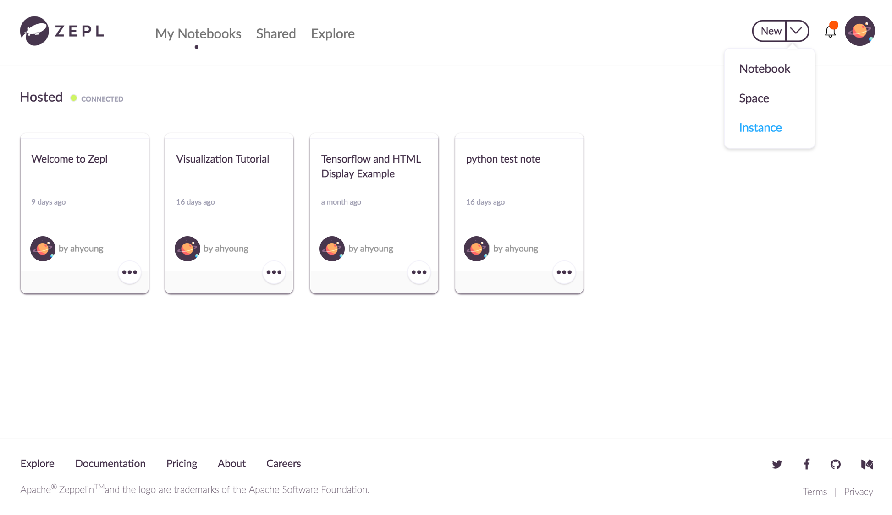
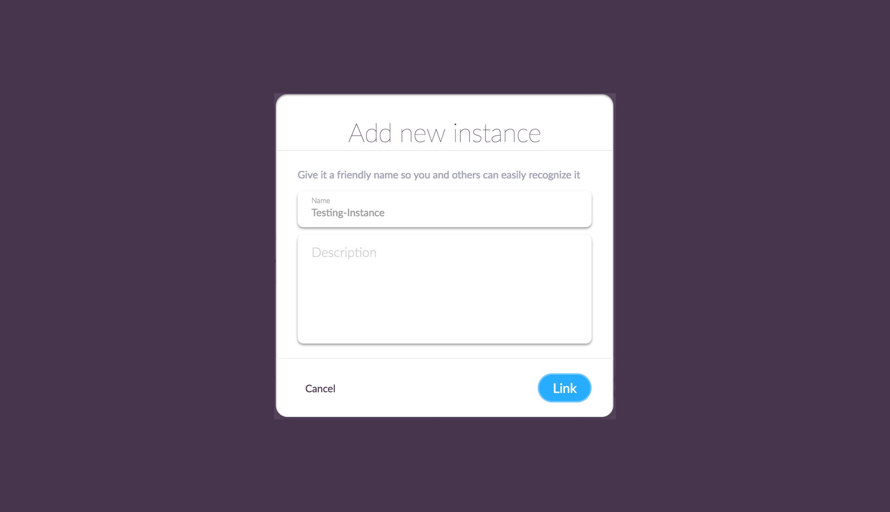
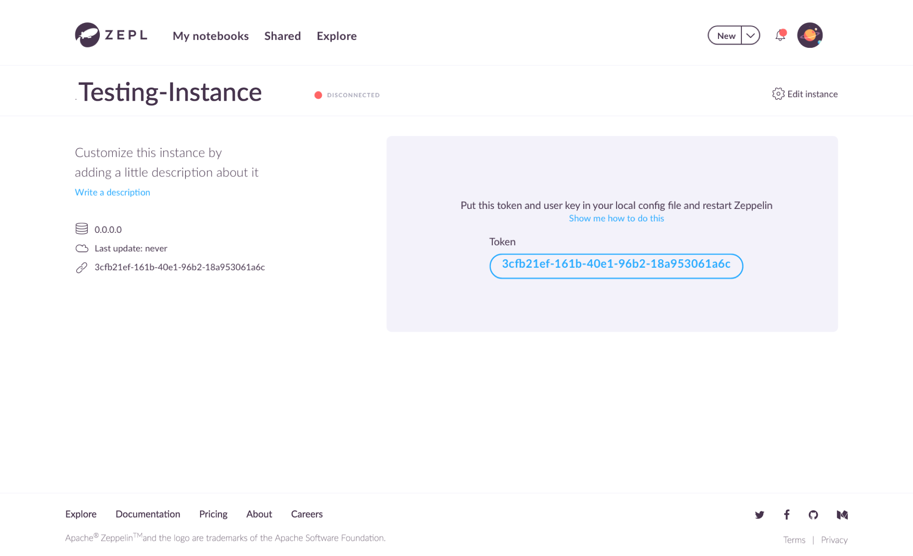
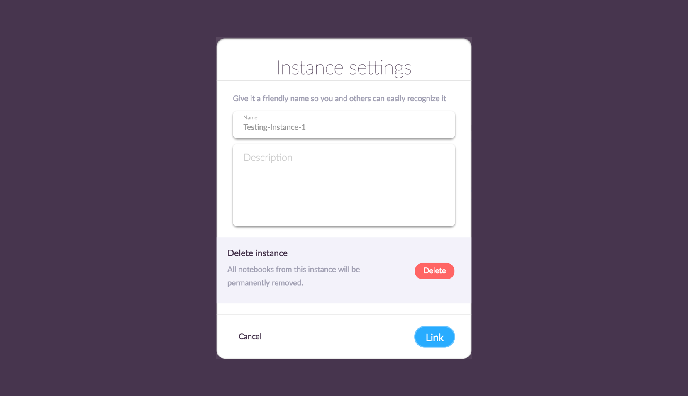
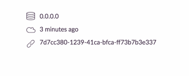

Integration with Apache Zeppelin
In this section, we will explain how you can create an instance and seamlessly connect it with your Apache Zeppelin.
Create a new Instance
After login to ZEPL, you'll be in My Notebooks page. Hosted instance is an instance provided from ZEPL by default. You can find some tutorial notes in it to play around.

To create a new instance, click Instance in the dropdown menu and type a instance name with short description for the new instance.

Then it will give you a Unique Token which will be used when you connect ZEPL with your Apache Zeppelin. You can see the other properties of the instance. (e.g. IP and instance creation time)

To edit the instance information such as name & description or to delete it, open a dialog using Edit instance located in top-right corner of the page.

But be carefull. Deleting an instance means you no longer want to syncronize that instance with Apache Zeppelin. So it will remove all notebook information included the instance from ZEPL.
Connect ZEPL with Apache Zeppelin
(Deprecated) Download integration library
NOTE : This section is only for Zeppelin-0.5.X users. If you are using Zeppelin-0.6.X or later, you can skip this section.
First of all, you need a library for integration.
Please click this download link for the latest version.
Then copy your library into lib directory under your ZEPPELIN_HOME ( Apache Zeppelin installation directory ).
If you don't have lib folder, just create a new one.
Setting Apache Zeppelin environment variables
When you connect a instance to your ZEPL account, you need to set the following environment variables into your ZEPPELIN_HOME/conf/zeppelin-env.sh file.
If you don't have this file, you can create it from ZEPPELIN_HOME/conf/zeppelin-env.sh.template.
$ cd ZEPPELIN_HOME/conf
$ cp zeppelin-env.sh.template zeppelin-env.sh
After activating this configuration file, add below three lines to zeppelin-env.sh file.
Don't forget to copy your Token generated before.

Below steps are little bit different according to your Apache Zeppelin version. So please check the version first.
(Deprecated) Zeppelin-0.5.X
export ZEPPELIN_NOTEBOOK_STORAGE="org.apache.zeppelin.notebook.repo.VFSNotebookRepo, com.nflabs.zeppelinhub.notebook.repo.ZeppelinHubRepo"
export ZEPPELINHUB_API_ADDRESS="ADDRESS_OF_ZEPPELINHUB_SERVICE" (e.g. https://www.zepl.com)
export ZEPPELINHUB_API_TOKEN="YOUR_TOKEN_STRING"
# With user key if provided
export ZEPPELINHUB_USER_KEY="YOUR_USER_KEY"
Zeppelin-0.6.X or later
export ZEPPELIN_NOTEBOOK_STORAGE="org.apache.zeppelin.notebook.repo.VFSNotebookRepo, org.apache.zeppelin.notebook.repo.zeppelinhub.ZeppelinHubRepo"
export ZEPPELINHUB_API_ADDRESS="ADDRESS_OF_ZEPPELINHUB_SERVICE" (e.g. https://www.zepl.com)
export ZEPPELINHUB_API_TOKEN="YOUR_TOKEN_STRING"
# With user key if provided
export ZEPPELINHUB_USER_KEY="YOUR_USER_KEY"
As you can see, only ZEPPELIN_NOTEBOOK_STORAGE was updated on Zeppelin-0.6.X.
You may also find up-to-date instructions on integrating latest Apache Zeppelin master branch with ZEPL on corresponding Apache Zeppelin documentation website.
Now, start (or restart) Apache Zeppelin.
$ cd ZEPPELIN_HOME
$ ./bin/zeppelin-daemon.sh start (or restart)
Then come back to ZEPL and check whether the green light is turned on or not.
Migrating Configurations
If you upgraded Zeppelin-0.5.X to later version, you need to change some configurations in Apache Zeppelin.
1. Remove zeppelinhub-integration-*.jar file under ZEPPELIN_HOME/lib/ directory.
$ rm ZEPPELIN_HOME/lib/zeppelinhub-integration-*.jar
2. From your Zeppelin-0.5.X installation you should have the following variables already set in your ZEPPELIN_HOME/conf/zeppelin-env.sh.
export ZEPPELIN_NOTEBOOK_STORAGE="org.apache.zeppelin.notebook.repo.VFSNotebookRepo, com.nflabs.zeppelinhub.notebook.repo.ZeppelinHubRepo"
export ZEPPELINHUB_API_ADDRESS="ADDRESS_OF_ZEPPELINHUB_SERVICE" (e.g. https://www.zepl.com)
export ZEPPELINHUB_API_TOKEN="YOUR_TOKEN_STRING"
# With user key if provided
export ZEPPELINHUB_USER_KEY="YOUR_USER_KEY"
Starting from Zeppelin-0.6.0 it is required that the second classname in ZEPPELIN_NOTEBOOK_STORAGE variable to be changed from com.nflabs.zeppelinhub.notebook.repo.ZeppelinHubRepo to org.apache.zeppelin.notebook.repo.zeppelinhub.ZeppelinHubRepo.
Thus you need to substitute
export ZEPPELIN_NOTEBOOK_STORAGE="org.apache.zeppelin.notebook.repo.VFSNotebookRepo, com.nflabs.zeppelinhub.notebook.repo.ZeppelinHubRepo"
with
export ZEPPELIN_NOTEBOOK_STORAGE="org.apache.zeppelin.notebook.repo.VFSNotebookRepo, org.apache.zeppelin.notebook.repo.zeppelinhub.ZeppelinHubRepo"
in your ZEPPELIN_HOME/conf/zeppelin-env.sh.
That's all. Then restart Zeppelin.
$ cd ZEPPELIN_HOME
$ ./bin/zeppelin-daemon.sh restart (or start)
Then come back to ZEPL and check whether the green light is turned on or not.